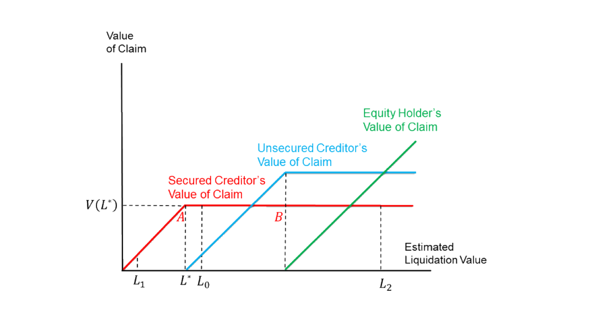

19. Capital Structure: Empirical Financial Contracting
本章主题：资本结构的实证——金融契约。 金融契约文献从「为何债务存在」回答资本结构问题，核心是激励冲突（比税收论证更有说服力）：债务融资实现相机控制权配置——经理因激励冲突做次优决策时外部融资方可接管。理论基础：Jensen-Meckling (1976)、Innes (1990)、Townsend (1979)、Aghion-Bolton (1992)；Kaplan-Strömberg (2003) 为 VC 实证契约的开创之作。§19.1 Ayotte-Morrison (2009)：153 个 Chapter 11 破产；债权人在破产前后拥有普遍控制（70% CEO 两年内被换、绝对优先权违反仅 8%、75% 用 DIP 融资），按优先序的支付函数（图 19.1）决定清算概率——担保债权人在拐点 \(L^\star\) 附近最想清算（无上行、怕风险）。§19.2 Roberts-Sufi (2009a)：财务条款违约（非支付违约）的债权人控制，准断点回归，选择偏误为负 (19.1)；违约后债权人缩信贷额度、提利率。§19.3 Akins et al. (2019) 管理层变更限制 CMR（降 CEO 离职风险）。§19.4 Nini et al. (2009)：32% 协议限制资本支出，业绩差→更可能受投资限制（图 19.5–19.11），降投资但事后业绩升。§19.5 Chodorow-Reich-Falato (2017)：银行（牵头行）健康经条款违约传导至实体——2008 危机中违约致信贷量降 11%（DiD，\(\beta_3>0\)）。§19.6 清算价值的重要性：Williamson (1988)/Hart-Moore (1994)/Berglöf-Von Thadden (1994)/Shleifer-Vishny (1992)；Benmelech et al. (2005) 用商业地产分区管制作可再配置性代理（选择偏误为正 (19.2)，(19.3) 规范）、Benmelech (2009) 用 19 世纪铁路轨距；更高清算价值→更高杠杆/更长期限。§19.7 Roberts-Sufi (2009b)：90%+ 长期协议在到期前被重新谈判（好时企业主动有利重谈、坏时违约被迫不利重谈），银行写下或有条款以分配后续重谈的讨价还价能力。
Chapter theme: the empirics of capital structure — financial contracting. The financial-contracting literature answers capital-structure questions from "why does debt exist," centered on incentive conflicts (more convincing than tax arguments): debt financing implements contingent control allocation — the external financier can take control when the manager makes sub-optimal decisions due to incentive conflicts. Theory foundations: Jensen-Meckling (1976), Innes (1990), Townsend (1979), Aghion-Bolton (1992); Kaplan-Strömberg (2003) is seminal for empirical VC contracts. §19.1 Ayotte-Morrison (2009): 153 Chapter 11 bankruptcies; creditors have pervasive control before/in bankruptcy (70% CEOs replaced within two years, absolute priority violation only 8%, 75% use DIP financing); the priority-ordered payoff functions (Figure 19.1) determine the liquidation probability — secured creditors most want to liquidate near the kink \(L^\star\) (no upside, fear risk). §19.2 Roberts-Sufi (2009a): creditor control via financial-covenant violations (not payment default), a quasi-RD, negative selection bias (19.1); after violation creditors cut credit facility and raise the rate. §19.3 Akins et al. (2019) change-of-management restrictions (CMR) to reduce CEO turnover risk. §19.4 Nini et al. (2009): 32% of agreements restrict capital expenditure, poor performance → more likely restricted (Figures 19.5–19.11), reducing investment but improving ex-post performance. §19.5 Chodorow-Reich-Falato (2017): a bank's (lead lender's) health transmits to the real sector through covenant violations — in the 2008 crisis violations caused an 11% credit decline (DiD, \(\beta_3>0\)). §19.6 Importance of liquidation value: Williamson (1988)/Hart-Moore (1994)/Berglöf-Von Thadden (1994)/Shleifer-Vishny (1992); Benmelech et al. (2005) use commercial-real-estate zoning as a redeployability proxy (positive selection bias (19.2), specification (19.3)), Benmelech (2009) uses 19th-century railroad gauge; higher liquidation value → higher leverage/longer maturity. §19.7 Roberts-Sufi (2009b): 90%+ of long-term agreements are renegotiated before maturity (firms initiate favorable renegotiation in good times, are forced into unfavorable ones on violation in bad times); banks write down contingency terms to assign bargaining power for later renegotiation.
19. Overview of Financial Contracting
金融契约文献从不同于传统权衡理论的角度回答资本结构问题（如：债务为何存在）。其激励冲突议题在推导最优资本结构时常比税收利益论证更有说服力。以激励冲突解释资本结构的理论：管理层薪酬与风险转移（Jensen-Meckling 1976）、管理层努力（Innes 1990）、真实信息披露/CSV（Townsend 1979）、不完全契约与公司控制权（Aghion-Bolton 1992；该模型中经理获私人收益、故有过度续营偏向）。核心思想：债务融资实现相机控制权配置——当经理因激励冲突做次优决策时，外部融资方可接管公司。
实证上，金融契约有许多值得描述与度量的重要侧面。Kaplan and Strömberg (2003) 是风投 (VC) 实证契约领域的开创之作，发现与 VC 的金融契约给 VC 大量控制权（现金流权、董事会权、投票权、清算权），并据理论研究解读其实证发现、指出一致与不一致之处，展示理论与实证如何共同揭示真相。下面是该领域若干精选论文。
The financial-contracting literature answers capital-structure questions (e.g. why does debt even exist) from a different angle than traditional trade-off theory. Its incentive-conflict issues are often more convincing than the tax-benefit argument when deriving the optimal capital structure. Theory papers explaining capital structure with incentive conflicts: management compensation and risk shifting (Jensen-Meckling 1976), management effort (Innes 1990), truthful disclosure/CSV (Townsend 1979), incomplete contract and corporate control rights (Aghion-Bolton 1992; managers receive private benefit and so have an excess continuation bias). The crucial idea: debt financing implements contingent control allocation — the external financier can take control when the manager makes sub-optimal decisions due to incentive conflicts.
Empirically, financial contracts have many aspects worth describing and measuring. Kaplan and Strömberg (2003) is seminal in empirical venture-capital (VC) contracting, finding that contracts with VCs give them a lot of control rights (cash-flow, board, voting, liquidation rights), and interpreting the findings relative to theory, showing how theory and empirics disclose truth together. Below are selected papers in the field.
19.1 Creditor Control and Conflicts between Junior and Senior Creditors: Ayotte and Morrison (2009)
研究 2001 年 153 个私营与上市公司的 Chapter 11 破产。
19.1.1 制度细节. 负债结构：按索取剩余价值的优先级从高到低——担保贷款债权人、无担保债券债权人、次级债券债权人、股东。Chapter 11 破产：公司资不抵债时申请，启动自动中止 (Automatic Stay)（暂停债权人收走资产的权利、给公司重组时间），在法院监督下进行，公司重生（重组）或清算后结束；不同于 Chapter 7，Chapter 11 旨在维持运营、最小化社会冲击。绝对优先权违反：若股东在所有债务清偿前获任何支付。第 363 条出售：债务人可试探性推销资产、与买家谈判、向法院申请破产拍卖出售；担保债权人可信用出价 (credit bid)（用其价值索取权作出价）。Remark 19.1：第 363 条出售未必是传统意义清算（公司可卖非核心业务单元以聚焦核心，即便无破产）。持有中债务人 (DIP)：破产中可继续运营但法律上为替代原公司的不同实体；可发债（DIP 融资）支持运营，担保贷款债权人有权反对更高优先级新债权人、故通常是 DIP 融资方（利率极高，如 30% APR，极赚钱）。
19.1.2 描述性发现. 债权人在破产前后拥有普遍控制、经理与股东几乎无控制（与「Chapter 11 给经理/股东更多控制」的传统观点相反）：破产申请前两年 70% CEO 被换；绝对优先权违反仅 8%；75% 用 DIP 融资（给债权人巨大控制）——95% DIP 债权人有权否决重组方案除非全额偿付、92% DIP 债权人对全部资产有担保权益。
19.1.3 假设检验. 核心假设：债权人冲突（负债结构）是否及在多大程度上影响破产中的最终资产配置（MM 1958 世界中各方无摩擦完美谈判，负债结构不应影响清算、唯基本面重要）。按优先序，担保债权人（高优先）、无担保债权人（低优先）、股东（剩余索取者）的支付函数如图 19.1。

无摩擦时清算值一对一变为索取值（45 度线）；担保债权人恰在拐点 \(L^\star\) 获全额。当估计清算值 \(L_0\)（近 \(L^\star\)）：担保债权人控制、不喜风险（重组的额外方差只带来未获全额的正概率、无上行）→ 更可能清算 → 违反 MM。当估计清算值 \(L_1\)：担保债权人远在价外、像股东、总想重组。当估计清算值 \(L_2\)：担保债权人不太在乎清算与否，无担保债权人可与之谈判不清算。该故事由图 19.2（重组概率的 Lowess 曲线，横轴 \(\log(\text{Secured Debt}/\text{Assets})\)，$=0$ 对应 \(L^\star\)）与图 19.3（重组概率 probit）支持：「担保债务$>0$」系数 $+0.380$（远价外时偏好重组）、「担保债务 25%–100%/$>$100% 资产」系数 $-0.352,-0.354$（近 \(L^\star\) 时偏好清算）。评论：样本小限统计力；漏了选择偏误（大担保债务积压时基本面经济价值或更差→更可能清算）；图 19.1 的 \(AB\) 段或非平（无担保债权人贿赂担保债权人不清算）；另有未排除的故事——只有「价内」方有权表决重组，故担保债权人有强动机低估清算值以使他方「价外」、从而在重组案了结后价值回升中获巨额溢价（故 \(L_1\) 处少清算、\(L^\star\) 处多清算）。
Study of 153 Chapter 11 bankruptcies of private and public firms in 2001.
19.1.1 Institutional details. Liability structure: claimants ranked by priority from high to low — secured loan creditor, unsecured bond creditor, subprime bond creditor, equity holder. Chapter 11 bankruptcy: filed when insolvent, initiating the Automatic Stay (temporarily suspending creditors' right to take assets, giving the firm time to restructure), under court supervision, ending after the firm emerges (restructures) or liquidates; unlike Chapter 7, Chapter 11 aims to maintain operation and minimize social impact. Absolute priority violation: if the equity holder gets any payment before all debt is paid. Section 363 Sale: the debtor can tentatively market assets, negotiate with buyers, and file a motion for a bankruptcy auction; secured creditors can make a credit bid (use their value claim as the bid). Remark 19.1: a Section 363 Sale isn't necessarily a traditional liquidation (a firm may sell a non-core unit to focus on its core, even without bankruptcy). Debtor in possession (DIP): in bankruptcy can still operate but is a legally different firm replacing the original; can raise DIP financing to support operations, and since secured loan creditors can object to higher-seniority new creditors they are typically the DIP lenders (very profitable, rates ~30% APR).
19.1.2 Descriptive findings. Creditors have pervasive control before/in bankruptcy, managers and equity holders little (contrary to the traditional view that Chapter 11 gives them more control): 70% of CEOs replaced within two years before filing; absolute priority violation only 8%; 75% use DIP financing (giving creditors enormous control) — 95% of DIP lenders can reject reorganization plans unless fully paid, 92% have a security interest in all assets.
19.1.3 Hypothesis testing. Core hypothesis: whether and to what extent creditor conflicts (liability structure) affect final asset allocation in bankruptcy (in an MM 1958 world, parties bargain perfectly without friction, so liability structure shouldn't matter, only fundamentals). By priority order, the secured creditor (higher), unsecured creditor (lower) and equity holder (residual claimant) have payoff functions as in Figure 19.1.
Without frictions, liquidation value transforms one-to-one into claim value (the 45° line); the secured creditor is fully paid right at the kink \(L^\star\). With estimated liquidation value \(L_0\) (near \(L^\star\)): the secured creditor controls and dislikes risk (restructuring's extra variance only adds a positive probability of not being paid in full, no upside) → more likely to liquidate → violates MM. With value \(L_1\): the secured creditor is far out of the money, acts like an equity holder, always wants to restructure. With value \(L_2\): the secured creditor doesn't care much, and the unsecured creditor can bargain with it to not liquidate. The story is supported by Figure 19.2 (a Lowess curve of reorganization probability, x-axis \(\log(\text{secured debt}/\text{assets})\), $=0$ corresponding to \(L^\star\)) and Figure 19.3 (a probit of reorganization probability): the "secured debt $>0$" coefficient $+0.380$ (prefer restructuring when far out of money), and "secured debt 25%–100% / $>\(100% of assets" coefficients \)-0.352,-0.354$ (prefer liquidating near \(L^\star\)). Comments: the small sample limits statistical power; the story missed selection bias (a large secured-debt overhang may signal worse fundamentals → more likely to liquidate); segment \(AB\) in Figure 19.1 may not be flat (the unsecured creditor may bribe the secured one not to liquidate); an alternative not ruled out — only parties "in the money" can vote on the plan, so secured creditors have a strong incentive to under-evaluate liquidation value to push others "out of money" and reap a huge premium from the value hike after the case closes (so they liquidate less at \(L_1\) and more at \(L^\star\)).
19.2 Creditor Control Outside Bankruptcy: Roberts and Sufi (2009) — and 19.3 Akins et al. (2019)
19.2 Roberts-Sufi (2009a). Aghion-Bolton (1992) 以与业绩相关的抽象「状态 \(s\)」刻画控制权转移，但 \(s\) 未必是支付违约。Roberts-Sufi 转向私人信贷协议中财务条款违约（非支付违约）的情形——样本大得多（1997–2007 间 39% 的 COMPUSTAT 上市公司违约）。财务条款常写在现金流与杠杆构造的变量上（最常用：债务/现金流，3.5 为临界；利息覆盖率 = 营业收入/利息支出），给债权人终止或加速偿付的权利，但总含糊（说能怎样而非必须怎样）；违约有周期性（图 19.4）。核心问题：债权人干预（违约 \(viol_{it}=1\) 所示）对资本结构（杠杆 \(lev_{it}\)）的效应？选择偏误 (17.1)：
$$\mathbb{E}[lev_{1it}\mid viol{=}1]-\mathbb{E}[lev_{0it}\mid viol{=}0]=\underbrace{\mathbb{E}[lev_{1it}\mid viol{=}1]-\mathbb{E}[lev_{0it}\mid viol{=}1]}_{\kappa}+\underbrace{\mathbb{E}[lev_{0it}\mid viol{=}1]-\mathbb{E}[lev_{0it}\mid viol{=}0]}_{\text{selection bias}<0} \tag{19.1}$$
偏误很可能为负（违约公司多债务过多、即便不违约也会降杠杆）。因无精确的条款变量数据、无法做精确断点回归，故用准断点回归：遗漏变量对杠杆的影响很可能连续，而违约指示在 1 处确定不连续；把常用条款变量加到高阶以控制基本面变异。结果：公司内净债务发行效应大，债权人使杠杆降低；由 10-K/10-Q 文件，违约时债权人通常缩信贷额度、提利率。缺点：无证据说明事后控制如何影响事前融资决策。
19.3 Akins et al. (2019) 管理层变更限制 (CMR)：研究银团贷款的私人信贷协议，CMR 出现于 9% 总体公司、17% 小公司。发现：CMR 更可能出现于小型、风险高的借款人的条款中，尤其当 CEO 也是创始人时（解读为债权人想降「CEO 离职风险」）；CMR 条款有约束力——有 CMR 的公司 CEO 离职率更低。
19.2 Roberts-Sufi (2009a). Aghion-Bolton (1992) model control shift via an abstract performance-related "state \(s\)," but \(s\) isn't necessarily payment default. Roberts-Sufi shift to financial-covenant violation (not payment default) in private credit agreements — a much larger sample (39% of COMPUSTAT public firms violate during 1997–2007). Financial covenants are typically written on cash-flow- and leverage-based variables (most common: debt/cash flow with a 3.5 cutoff; interest coverage = operating income/interest expense), giving creditors the right to terminate or accelerate payment, but always nebulous (saying what can happen, not what must); violation is cyclical (Figure 19.4). Core question: the effect of creditor intervention (implied by violation \(viol_{it}=1\)) on capital structure (leverage \(lev_{it}\))? The selection bias (17.1):
$$\mathbb{E}[lev_{1it}\mid viol{=}1]-\mathbb{E}[lev_{0it}\mid viol{=}0]=\underbrace{\mathbb{E}[lev_{1it}\mid viol{=}1]-\mathbb{E}[lev_{0it}\mid viol{=}1]}_{\kappa}+\underbrace{\mathbb{E}[lev_{0it}\mid viol{=}1]-\mathbb{E}[lev_{0it}\mid viol{=}0]}_{\text{selection bias}<0} \tag{19.1}$$
is likely negative (violating firms probably have too much debt, would reduce leverage anyway). With no precise covenant-variable data for an exact RD, they use a quasi-RD: omitted variables' effect on leverage is likely continuous, while the violation indicator is certainly discontinuous at 1; throw in usual covenant variables to high orders to control fundamental variation. Results: a large within-firm effect on net debt issuance, creditors reduce leverage; by 10-K/10-Q filings, on violation creditors typically cut the credit facility and raise the rate. Drawback: no evidence on how ex-post control affects ex-ante financing.
19.3 Akins et al. (2019) change-of-management restrictions (CMR): study private syndicated-loan agreements; CMR appears in 9% of all firms, 17% of small firms. Findings: CMR is more likely with small, risky borrowers, especially when the CEO is also the founder (interpreted as creditors wanting to reduce "CEO turnover risk"); CMR is binding — firms with CMR have lower CEO turnover.
19.4 Creditor's Influence on Firm's Investment: Nini et al. (2009)
研究上市公司借款人与银行的私人信贷协议对投资决策的影响。发现：32% 协议明确限制资本支出；业绩差（信用质量恶化）→ 更可能受投资限制（图 19.5），故债权人介入以限制新投资、降低公司价值的波动；投资限制有约束力（图 19.6：公司不对称地聚集在资本支出限额之下→限制有约束力）、确实降低资本支出（图 19.8）；受新限制的公司市值与经营业绩在限制后上升（图 19.7a、19.7b）——但若过度激进地解读为效率改善则可疑（限制或杀掉最差但仍正 NPV 的项目、不可能有效率、但平均业绩因下端被移除而上升）。
选择偏误（\(Rest_i=1\) 受投资限制、\(I_{1i}/I_{0i}\) 为受/不受限制下的投资）：
$$\mathbb{E}[I_{1i}\mid Rest{=}1]-\mathbb{E}[I_{0i}\mid Rest{=}0]=\underbrace{\mathbb{E}[I_{1i}\mid Rest{=}1]-\mathbb{E}[I_{0i}\mid Rest{=}1]}_{\kappa}+\underbrace{\mathbb{E}[I_{0i}\mid Rest{=}1]-\mathbb{E}[I_{0i}\mid Rest{=}0]}_{\text{selection bias}<0}$$
偏误很可能为负（受限公司或已投资过多、即便不被迫也会减投资）。图形化解决：图 19.8 显示「始终受限」与「新受限」公司在新限制前的预趋势几乎相同→选择偏误非大问题。
后续研究. Nini et al. (2012) 用 1996–2008 SEC 文件识别全部违约（10%–20% 公司），发现违约后公司通常：资产与 PP&E 增长率更低、资本支出与现金收购更低（图 19.9）；新债发行、总债务、股东派付更低、现金水平更高（图 19.10）；CEO 离职率更高（图 19.11，债权人对公司治理有非正式影响）；违约后经营业绩与股价上升（效率改善，或为债权人介入之果）。Ershahin et al. (2018) 用美国普查局机构 (establishment) 层数据研究违约公司的公司内资源再配置（聚焦违约阈值附近、控制条款变量），发现：违约公司内就业与投资减少、非核心/低生产率机构更频繁关闭；管理层代理成本越高效应越强；债权人介入通过把资源向更高效方式再配置改善公司效率。
Study the effect of private credit agreements between public-firm borrowers and banks on investment decisions. Findings: 32% of agreements explicitly restrict capital expenditure; poor performance (deteriorating credit quality) → more likely to face an investment restriction (Figure 19.5), so creditors intervene to restrict new investment and reduce the volatility of firm value; the restriction is binding (Figure 19.6: firms asymmetrically cluster just below the capital-expenditure limit) and indeed reduces capital expenditure (Figure 19.8); newly restricted firms' market values and operating performance rise after the restriction (Figures 19.7a, 19.7b) — but interpreting this too aggressively as efficiency improvement is questionable (the restriction may kill the worst-but-still-positive-NPV project, which can't be efficient, yet average performance rises as the lower end is removed from the average).
The selection bias (\(Rest_i=1\) if restricted, \(I_{1i}/I_{0i}\) investment under restriction/none):
$$\mathbb{E}[I_{1i}\mid Rest{=}1]-\mathbb{E}[I_{0i}\mid Rest{=}0]=\underbrace{\mathbb{E}[I_{1i}\mid Rest{=}1]-\mathbb{E}[I_{0i}\mid Rest{=}1]}_{\kappa}+\underbrace{\mathbb{E}[I_{0i}\mid Rest{=}1]-\mathbb{E}[I_{0i}\mid Rest{=}0]}_{\text{selection bias}<0}$$
likely negative (restricted firms may already over-invest, would cut anyway). Graphical resolution: Figure 19.8 shows the pre-trend of "always-restricted" and "newly-restricted" firms is almost the same before the new restriction → selection bias is not a big issue.
Follow-ups. Nini et al. (2012) use 1996–2008 SEC filings to identify all violations (10%–20% of firms), finding firms after violation typically: lower growth in assets and PP&E, lower capital expenditures and cash acquisitions (Figure 19.9); lower new debt issuance, total debt, shareholder payouts, higher cash (Figure 19.10); higher CEO turnover (Figure 19.11, creditors have informal governance influence); operating performance and stock price increase after violation (efficiency improves, possibly from creditor intervention). Ershahin et al. (2018) use establishment-level U.S. Census data on within-firm resource allocation of violating firms (near the threshold, controlling covenant variables), finding within violating firms employment/investment fall, non-core/less-productive establishments close more often; effects stronger when management agency cost is higher; creditor intervention improves efficiency by relocating resources more productively.
19.5 Effect of Creditor's Financial Health on Real Economy: Chodorow-Reich and Falato (2017)
用 2008 危机中银团贷款的监管数据，研究银行（牵头行）健康通过企业借贷对实体的影响。实证设计：识别假设——更健康与更不健康放贷方的违约者特征相似（由平衡检验 Figure 19.12 显示二者杠杆、信用评级、违约倾向相似支持）。DiD：
$$Y_{b,f,t}=\beta_0+\beta_1[\text{Bad Lender}_b]+\beta_2[\text{Bind}_{f,t-1}]+\beta_3[\text{Bad Lender}_b\times\text{Bind}_{f,t-1}]+\boldsymbol\gamma'\mathbf X_{f,f,t}+\varepsilon_{b,f,t}$$
\(Y\)=公司 \(f\)（自牵头行 \(b\) 的贷款 \(l\)）在 \(t\) 期的结果（一个具体 \(Y\) 为 Credit Reduced，$=1$ 若贷款提前终止或缩量）；Bad Lender\(_b\) = 牵头行健康排名归一到 $[0,1]\(（1 最差）；Bind\)_{f,t-1}$ = 公司在 \(t-1\) 或 \(t\) 违约的指示；\(\mathbf X\) 控制；\(\beta_3\) 为兴趣参数。结果（图 19.13）：\(\beta_3\) 在所有规范中显著为正 → 违约后信贷量缩减。发现：企业借长期；约 1/3 公司违约（使银行能强制重谈）；银行不健康（危机中）更少给违约豁免、重谈常要求更低贷款量；条款违约解释 2008–2009 危机中 11% 的贷款量下降（约等于该期信贷总降幅）；故金融部门健康主要经条款违约传导至实体（银行用违约来缩信贷）；更小/更集中的银团中牵头行更重要、结果对其健康更敏感。贡献：此前人们以为金融部门不健康因贷款长期而不应传导至实体；本文证其错——金融部门压力可经违约后的强制重谈高频传导至实体。
Using supervisory data of syndicated bank loans during the 2008 crisis, study how a bank's (lead lender's) health transmits to the real sector through corporate borrowing. Empirical design: identification assumption — covenant violators of healthier and less-healthy lenders have similar characteristics (supported by a balance test, Figure 19.12, showing similar leverage, credit ratings, and propensities to violate). DiD:
$$Y_{b,f,t}=\beta_0+\beta_1[\text{Bad Lender}_b]+\beta_2[\text{Bind}_{f,t-1}]+\beta_3[\text{Bad Lender}_b\times\text{Bind}_{f,t-1}]+\boldsymbol\gamma'\mathbf X_{f,f,t}+\varepsilon_{b,f,t}$$
\(Y\) = outcome of firm \(f\) (with loan \(l\) from lead bank \(b\)) in period \(t\) (one specific \(Y\) is Credit Reduced, $=1$ if the loan is terminated before maturity or reduced); Bad Lender\(_b\) = the lead bank's health rank normalized to $[0,1]$ (1 worst); Bind\(_{f,t-1}\) = an indicator $=1$ if the firm violates in \(t-1\) or \(t\); \(\mathbf X\) controls; \(\beta_3\) the parameter of interest. Results (Figure 19.13): \(\beta_3\) significantly positive in all specifications → credit is reduced following violation. Findings: corporate borrowers borrow long-term; ~1/3 of firms breach covenants (enabling banks to force renegotiation); an unhealthy bank (in crisis) less often grants a waiver and requires a lower loan volume in renegotiation; covenant violation accounts for an 11% decline in loan volumes during the 2008–2009 crisis (~the total credit decrease then); so financial-sector health transmits to the real sector largely through covenant violation (banks use violations to reduce credit); in smaller/more concentrated syndicates the lead lender matters more and the outcome is more sensitive to its health. Contribution: previously people believed financial-sector troubles shouldn't transmit to the real sector since loans are long-term; this paper shows it's wrong — the pressure transmits via forced renegotiation following violation, at high frequency.
19.6 Importance of Liquidation Value
19.6.1 理论相关性. 清算价值 = 坏现金流状态下资产次优用途的价值，对公司行为有实效。理论视角：Williamson (1988)（交易成本）——清算价值之忧或事前降低运营效率；资产专用性越高清算交易成本越高、须接受更差债务契约，公司或低效地追逐较少专用、更可再配置的资产（可再配置性 = 资产替代用途；不可流动性 = 资产出售难度；可售性 = 二者结合、决定清算价值）。Hart-Moore (1994)（人力资本）——人力资本无法承诺/完美契约化，清算价值对债务条款关键。Berglöf-Von Thadden (1994)（不完全契约重谈）——小清算价值 + 短期高级债权人可降企业家代理问题（短期债权人更强硬、若清算值小到使其受损则更常选清算）。Shleifer-Vishny (1992)——清算价值内生（取决于可买资产的买家集合及其财务状况）。实证基本可检验含义：「清算价值如何影响资本结构？」传统研究回归杠杆于 PP&E/总资产，但有形资产未必有高清算价值、非好代理。
19.6.2 商业地产的证据：Benmelech et al. (2005). 用 1992.1.1–1999.3.30 美国 14,159 笔商业地产交易（COMPS.com）研究清算价值对债务契约的影响。好行业（商业地产购置高杠杆，LTV 0.68–0.77）。聚焦各物业杠杆如何受商业分区管制 (zoning) 影响——分区管制捕捉物业许可用途的灵活性、用作可再配置性（次优用途价值/清算价值）的代理。选择偏误 (17.1)（\(z_i=1\) 更灵活分区、\(z_i=0\) 更严）：
$$\mathbb{E}[lev_{1i}\mid z{=}1]-\mathbb{E}[lev_{0i}\mid z{=}0]=\underbrace{\mathbb{E}[lev_{1i}\mid z{=}1]-\mathbb{E}[lev_{0i}\mid z{=}1]}_{\kappa}+\underbrace{\mathbb{E}[lev_{0i}\mid z{=}1]-\mathbb{E}[lev_{0i}\mid z{=}0]}_{\text{selection bias}>0} \tag{19.2}$$
偏误很可能为正（灵活区物业多为大型企业如超市、本性高杠杆；严区为小企业如干洗店、本性低杠杆）。规范：
$$\text{loan characteristic}_i=F(\text{redeployability}_i,\ \text{price}_i,\ \text{cap rate}_i,\ \text{controls}_i)+\varepsilon_i \tag{19.3}$$
用普查区 (census tracts) 固定效应作部分控制以减偏误。结果（图 19.14）：更高可再配置性（更高清算价值）→ 更高杠杆。评论：普查区 FE 或恶化偏误（市政府在规划中有意在普查区内造分区灵活性变异，本性极不同的公司可能落入同一普查区内不同分区地→ FE 不解决、反使比较更不可比）；变量 \(\text{price}_i\) 不应放 (19.3) 右侧（价格是可再配置性影响杠杆的渠道：更高可再配置→更高价→更多债；估计渠道组合时不应关掉此主要经济渠道）。
19.6.3 19 世纪铁路的证据：Benmelech (2009). 用 1868/1873/1877/1882 年 221 家铁路数据研究资产可售性对杠杆与债务期限的影响。好数据集（铁路资产可售性主要取决于轨距 gauge——两轨间水平距离；附近用同轨距的铁路越多、可售性越高）。发现：可售性更高的铁路用更长期限债务；杠杆与可售性无关。评论：估计有个人能力问题（铁路当时极受创始人才能影响、有才领袖既能用更长期限债又能统一附近轨距→可售性与债务期限经个人能力相关而非彼此直接效应）。
Remark 19.2 清算价值重要性的实证研究总聚焦于特殊行业/环境（如商业地产、铁路），需更严肃的研究把有效性推广到更一般行业。
19.6.1 Theoretical relevance. Liquidation value = the value of the second-best use of assets in bad cash-flow states, with real effects on firm behavior. Perspectives: Williamson (1988) (transaction cost) — concern for liquidation value may reduce ex-ante operating efficiency; higher asset specificity → higher liquidation transaction cost and worse debt contracts, so a firm may inefficiently pursue less-specific, more-redeployable assets (redeployability = alternative use; illiquidity = difficulty of sale; salability = the combination that determines liquidation value). Hart-Moore (1994) (human capital) — human capital cannot be committed/perfectly contracted, so liquidation value is crucial to debt terms. Berglöf-Von Thadden (1994) (incomplete-contract renegotiation) — a small liquidation value + a short-term senior creditor reduces the entrepreneur's agency problem (the short-term creditor is tougher, choosing to liquidate more often if the liquidation value is so small it would take a loss). Shleifer-Vishny (1992) — liquidation value is endogenous (depends on the set of buyers and their financial conditions). The basic testable implication: "how does liquidation value affect capital structure?" Traditional research regresses leverage on PP&E/Total Assets, but tangible assets need not have high liquidation value and are a poor proxy.
19.6.2 Evidence from commercial real estate: Benmelech et al. (2005). Using 14,159 U.S. commercial real estate transactions Jan 1, 1992–Mar 30, 1999 (COMPS.com) to study the effect of liquidation value on debt contracting. A good industry (purchases highly levered, LTV 0.68–0.77). Focus on how each property's leverage is affected by commercial zoning regulation — zoning captures the flexibility of permitted uses, used as a proxy for redeployability (the second-best-use/liquidation value). The selection bias (17.1) (\(z_i=1\) more flexible zoning, \(z_i=0\) stricter):
$$\mathbb{E}[lev_{1i}\mid z{=}1]-\mathbb{E}[lev_{0i}\mid z{=}0]=\underbrace{\mathbb{E}[lev_{1i}\mid z{=}1]-\mathbb{E}[lev_{0i}\mid z{=}1]}_{\kappa}+\underbrace{\mathbb{E}[lev_{0i}\mid z{=}1]-\mathbb{E}[lev_{0i}\mid z{=}0]}_{\text{selection bias}>0} \tag{19.2}$$
likely positive (flexible-zone properties are typically large businesses like supermarkets, high leverage by nature; strict zones are small businesses like dry cleaners, low leverage by nature). The specification:
$$\text{loan characteristic}_i=F(\text{redeployability}_i,\ \text{price}_i,\ \text{cap rate}_i,\ \text{controls}_i)+\varepsilon_i \tag{19.3}$$
with census-tract fixed effects as partial controls to reduce the bias. Results (Figure 19.14): higher redeployability (higher liquidation value) → higher leverage. Comments: census-tract FE could deteriorate the bias (the municipal government intentionally creates zoning-flexibility variation within tracts; very different firms by nature may fall into different zoning lands within a tract → FE doesn't solve it and makes the comparison less comparable); the variable \(\text{price}_i\) should not be on the RHS of (19.3) (price is a channel through which redeployability affects leverage: higher redeployability → higher price → more debt; estimating a combination of channels, we shouldn't shut down this major economic channel).
19.6.3 Evidence from 19th-century railroads: Benmelech (2009). Using data on 221 railroads in 1868/1873/1877/1882 to study the effect of asset salability on leverage and debt maturity. A good dataset (railroad salability depends mainly on gauge — the horizontal distance between two rails; the more nearby railroads using the same gauge, the higher the salability). Findings: railroads with higher salability use longer-maturity debt; leverage is unrelated to salability. Comment: a personal-competence issue (railroads then were much affected by founders' talents; a talented leader could both use longer-maturity debt and unify nearby gauges → salability and debt maturity correlated through personal competence, not a direct effect).
Remark 19.2 Empirical research on the importance of liquidation value always focuses on special industries/environments (commercial real estate, railroads), and needs more serious studies to extend validity to more general industries.
19.7 Write Agreements to be Renegotiated: Roberts and Sufi (2009)
事后重谈的必然性总会改变事前激励。Roberts-Sufi (2009b) 对私人信贷协议重谈作纯描述性研究（1996–2005 年 1,000 份美国上市公司私人信贷协议）。发现：重谈频繁——90%+ 的长期协议在到期前其主要条款（本金、利率、期限、抵押）被重谈；重谈多发生在协议生命早期、无财务压力或条款违约时；重谈呈周期性（图 19.15a）；有利重谈（对借款人有利：(1) 增量且利差不变、(2) 利差降且量不变、(3) 量增且利差降）发生在好时、企业自愿选择（图 19.15b，因只有量与利差都对企业有利变动的重谈才会发生、必由企业提出）；不利重谈发生在坏时、企业违约（图 19.15c）。
谜题与猜想：谜题——企业有权在好条件下重谈有利于己的条款、但银行不能（除非企业违约），故银行在为企业对冲周期性（好时有上行、坏时只要不违约就不担下行），银行为何如此？更费解——银行写下他们明知极可能被重谈的全部或有条款，为何？作者猜想：银行写下或有条款是为在后续重谈中给各方分配讨价还价能力。据图 19.16a–19.16d：图 19.16a/b 中有条款的公司业绩好时更可能有利重谈→有条款的好业绩公司比无条款者讨价还价能力更强；图 19.16c/d 中有定价网格 (pricing grid，借款人利息支付基于其落入的业绩网格) 的公司业绩差时更可能不利重谈→有条款的差业绩公司比无条款者讨价还价能力更弱。
The inevitability of ex-post renegotiation always changes ex-ante incentives. Roberts-Sufi (2009b) provide a purely descriptive study of renegotiation in private credit agreements (1,000 U.S. public-firm private credit agreements, 1996–2005). Findings: renegotiation is frequent — 90%+ of long-term agreements have major terms (principal, interest, maturity, collateral) renegotiated before stated maturity; it mostly happens early in the agreement's life without financial stress or covenant violation; it is cyclical (Figure 19.15a); favorable renegotiation (favorable to borrowers: (1) more amount, constant spread; (2) lower spread, constant amount; (3) both) happens in good times when firms voluntarily choose to (Figure 19.15b, since only renegotiation with both amount and spread changing favorably must be proposed by firms); unfavorable renegotiation happens in bad times when firms violate covenants (Figure 19.15c).
Puzzle and conjecture: the puzzle — firms can renegotiate terms in their favor in good conditions, but banks cannot (unless firms violate covenants), so banks insure firms against cyclicality (good times have upside, bad times no downside as long as no violation); why? More puzzling — banks write down all contingency terms they know are very likely to be renegotiated; why? The authors conjecture banks write down contingency terms to assign bargaining power to each party in later renegotiation. Per Figures 19.16a–19.16d: in 19.16a/b firms with a covenant are more likely to get a favorable outcome when performing well → good-performing firms with covenants have stronger bargaining power than without; in 19.16c/d firms with a pricing grid (interest payment based on which performance grid the borrower falls into) are more likely to get an unfavorable outcome when performing badly → bad-performing firms with covenants have weaker bargaining power than without.
References
- Aghion, P. and P. Bolton (1992). An incomplete contracts approach to financial contracting. The Review of Economic Studies 59(3), 473–494.
- Akins, B., D. De Angelis, and M. Gaulin (2019). Debt contracting on management. Journal of Finance, Forthcoming.
- Ayotte, K. M. and E. R. Morrison (2009). Creditor control and conflict in chapter 11. Journal of Legal Analysis 1(2), 511–551.
- Benmelech, E. (2009). Asset salability and debt maturity: Evidence from nineteenth-century American railroads. The Review of Financial Studies 22(4), 1545–1584.
- Benmelech, E., M. J. Garmaise, and T. J. Moskowitz (2005). Do liquidation values affect financial contracts? Evidence from commercial loan contracts and zoning regulation. The Quarterly Journal of Economics 120(3), 1121–1154.
- Berglöf, E. and E.-L. Von Thadden (1994). Short-term versus long-term interests: Capital structure with multiple investors. The Quarterly Journal of Economics 109(4), 1055–1084.
- Chodorow-Reich, G. and A. Falato (2017). The loan covenant channel: How bank health transmits to the real economy. NBER Technical report.
- Ersahin, N., R. M. Irani, and H. Le (2018). Creditor control rights and resource allocation within firms. ECGI-Finance Working Paper (484).
- Hart, O. and J. Moore (1994). A theory of debt based on the inalienability of human capital. The Quarterly Journal of Economics 109(4), 841–879.
- Innes, R. D. (1990). Limited liability and incentive contracting with ex-ante action choices. Journal of Economic Theory 52(1), 45–67.
- Jensen, M. C. and W. H. Meckling (1976). Theory of the firm: Managerial behavior, agency costs and ownership structure. Journal of Financial Economics 3(4), 305–360.
- Kaplan, S. N. and P. Strömberg (2003). Financial contracting theory meets the real world: An empirical analysis of venture capital contracts. The Review of Economic Studies 70(2), 281–315.
- Modigliani, F. and M. H. Miller (1958). The cost of capital, corporation finance and the theory of investment. The American Economic Review 1, 3.
- Nini, G., D. C. Smith, and A. Sufi (2009). Creditor control rights and firm investment policy. Journal of Financial Economics 92(3), 400–420.
- Nini, G., D. C. Smith, and A. Sufi (2012). Creditor control rights, corporate governance, and firm value. The Review of Financial Studies 25(6), 1713–1761.
- Roberts, M. R. and A. Sufi (2009a). Control rights and capital structure: An empirical investigation. The Journal of Finance 64(4), 1657–1695.
- Roberts, M. R. and A. Sufi (2009b). Renegotiation of financial contracts: Evidence from private credit agreements. Journal of Financial Economics 93(2), 159–184.
- Shleifer, A. and R. W. Vishny (1992). Liquidation values and debt capacity: A market equilibrium approach. The Journal of Finance 47(4), 1343–1366.
- Townsend, R. M. (1979). Optimal contracts and competitive markets with costly state verification. Journal of Economic Theory 21(2), 265–293.
- Williamson, O. E. (1988). Corporate finance and corporate governance. The Journal of Finance 43(3), 567–591.